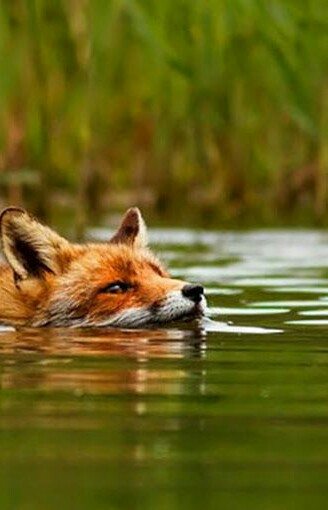
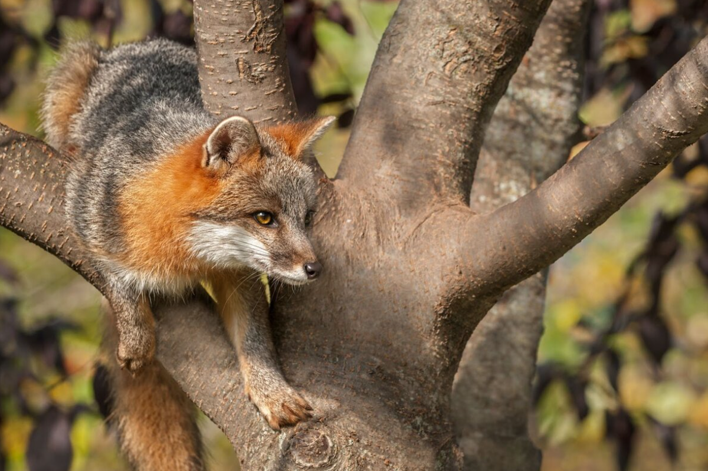
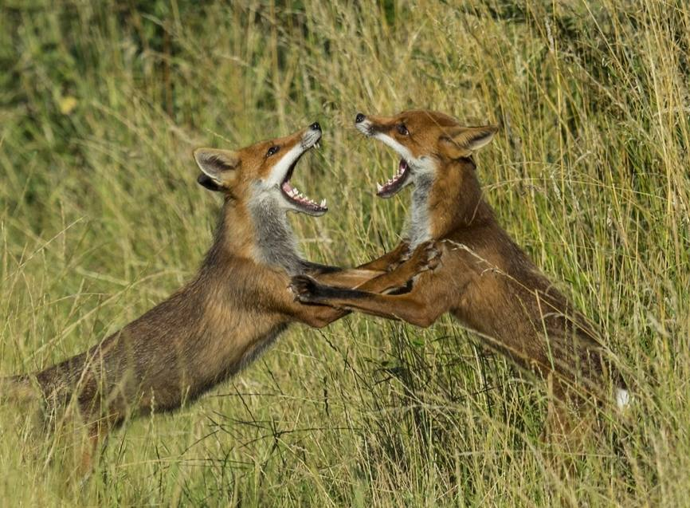
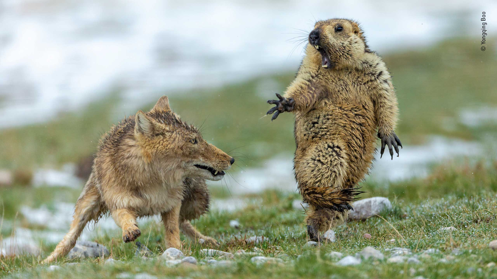
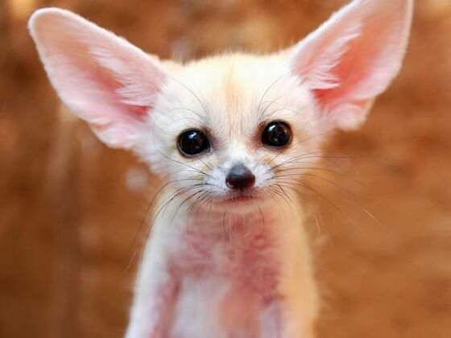

Начнем с того что данная статья, если ее можно так назвать, является не полным описанием животного или, скажем, его образа жизни, а скорее сборной солянкой разных фактов, который мне показались интересными или забавными. Ну и плюс ко всему я поделюсь теми фактами, которые и так уже давно знаю. Ладно, хватит предисловий и начмем уже разговор об этих милых существах.
Для начала все же пройдемся по основным характеристикам. Лисица это хищник из семейства псовых. Насчитывает 12 видов группы ну и плюс к этому морфы лисицы. Размер тела в основном варьируется от 40 до 90 см, масса тела от 1-2 до 10 кг. Собственно, хотя и кажется что обыкновенная лисица является стандартом и принимает средний показатель для всех характеристик, все же на самом деле она же является и самой большой представительницей рода. Имеют очень длинный хвост, до 60 см, из-за чего в некоторых случаях он может достигать длины 2/3 самого тела. Конечности относительно короткие, а голова вытянутая. Волосянной покров высокий, а окрас зачастую либо принимает оттенки рыжего либо черного. Живут обычно в лесостепях или степях, хотя тут опять же все зависит от вида. Ну и на последок, питаются они обычно мелкой живностью, такой как суслики и мыши. На этом, пожалуй из основной зарактеристики все.
Так что теперь я предлагаю пройтись по все пунктам по-немногу.
Да-да, знаю, Америку не открыл. Думаю любой знает о том факте, какие они хитрые и ловкие и так далее тому подобное. А как насчет факта, что они способны охотится на ежей, скидывая их в воду? Ладно, возможно это вы тоже знаете. А что если я скажу, что если лисица на видит рядом водоема, она может просто пописать на ежа, тем самым спровоцировав его также, как при скидывании в воду?
А может быть вы слышали, как они избавляются от блох при помощи воды и палки? Тут конечно следует уточнить что никакой палки на само деле и в помине нет. На самом деле они поступают так: лисицы выгрызают комок своей шерсти, и акуратненько, держа его в пасти, задом погружаются в воду. Блохи реагируют на изменение среды и постепенно перемещаются к голове, пока не доходят до клочка шерсти, который для блох из-за запаха кажется продолжением тела. Ну и как вы понимаете, тогда лисица просто отпускает клочек шерсти и довольная выходит из воды.
И все это только малая часть их веселой наглой жизни. Вот тут можно уже по-подробнее углубиться в их образ жизни
Тут вы можете подумать, что мое решение рассказать об их охоте как подпункт их хитрости это странно. Однако сами посудите, разве весь процесс охоты лисы на кого-то нельзя назвать одним большим коварным планом? Вот и я так думаю.
На кого бы лисы не охотились, со стороны это всегда выглядит удивительно. Рассмотрим по-подробнее весь процесс:
Пожалуй к фактам об охоте можно добавить еще пару вещей.
А знаете зачем я вообще начал тему про охоту? Именно. Гифка ниже это единственная причина. Для меня лично это один из ответов на главный вопрос статьи.

Это будет маленький пункт и вы думаю сами знаете почему...
Начнем с того что помимо таких врагов, как койоты и волки, есть еще и орлы. В основном это происходит только с детенышами, но все же.
Теперь же поговорим вот о чем. Знаете ведь такой спорт как охота на лис в Англии? А знаете вообще откуда это пошло? На самом деле охота на лис пошла от угрозы сельскому хозйству. Еще в 1534 году некий фермер использовал собак для преследования лисы, после подозрения в убийстве большого количества скота. После этого считается что англичане начали продвигать идею охоты. Ежегодно, когда закона о запрете еще не объявили, убивали по 15 тысяч лис. В наше же время все еще остались так называемые клубы, в которых, хоть и говорили о замене лис на ненастоящих, все равно продолжается охота на лис и по сей день.
Ладно, закончим о грустном, расскажу пару фактов и сразу перейдем к следующему пункту.
Во-первых, не смотря на такое угнетение со стороны народа, лис все равно не так легко было поймать. Напоминаю что это все еще пункт о их уме и хитрости. Лисы целенаправленно путают следы, что не дает собакам их найти. Помимо этого лисы используют и другие хитрости, такие как несколько замаскированных выходов в норе, которые в случае чего лисы открывают.
Кстати о норах, лисы настолько ленивые, что если есть возможность обустроиться в чужой норе, то они это делают и не утруждают себя в создании собственной. Бывали даже случаи сожительства лисицы с барсуком.
Так как про образ жизни мне рассказывать не так много, то скорее этот пункт будет именно про взаимоотношения
Лисы вообще обычно занимаются оседлым образом жизни и меняют место обитания только в детстве, отходя от место проживания родителей на 10-35 км. Лисицы - моногамные животные, хотя отношения с партнерами остается только на время выведения потомства до их взросления. Забавным фактом, кстати, является то, что выбор партнера делается на основе ума, а не силы самца, как это происодит у других млекапитающих.
Хотя я и сказал про моногамию, также бывают и случаи, когда у самцов бывает несколько самок. Еще одним "но" здесь является то, что если погибает самец, то самка спонкойно находит другого самца для защиты потомства, в отличие от самцов, которые в итоге остаются одни до конца жизни.
В общем про этот пункт рассказать интересного больше нечего, в конце концов существа эти ближе к одиночному образу жизни. В виде исключения можно привести только серых лисиц, они остаюся в паре до конца своей жизни.
Ах да, смотрите какая классная есть у них особенность, считайте ответ на вопрос статьи №2. ТО что происходит на видео это не борьба, а самый настоящий брачный танец - фокстрот.
Как я уже говорил в начале статьи, существует всего 12 видов, но, как вы понимаете, проходиться по каждому из них смысла нет, так как в основном все отличия между видами заключаются в окрасе и размере. Поэтому предлагаю пройтись только по самым ключевым
Я уже неоднократно упоминал ее и это было не с проста, ведь у нее есть серьезное отличие от других видов - ее ловкость, сравнимая с ловкостью кошки или енота. В остальном нельзя назвать какое-то превосходство над лисицей обыкновенной. Даже наоборот считается что серая лиса бугливее других видов. Также она больше других видов питается растительной пищей.
Думаю все вы знаете эту мордашку. Я думаю для каждого из вас эта лиса является символом усталости от жизни и отчужденности, а все из-за очень странного строения глаз. Не знаю как у вас, но меня в момент поиска информации удивил один факт. Мне всегда казалось, что эта лиса чуть ли не больше волка или около того. Либо я недостаточно раз видел это животное, либо все мое внимание привлекала эта морда, но суть в том что тибетская лиса очень маленькая(60 см), уступая размером только фенеку. И ведь действительно, если всмотреться в фотографии можно заметить, что у этой "величественной фигуры" до нелепого маленькое тело. Вот фотография для сравнения:
Кстати по поводу символа отчужденности - стиль жизни тебетской лисы как будто подыгрывает созданному образу, ведь эта лиса больше всех остальных шугается людей. Мало того, что она почти не приближается к людям, так еще и друг с другом они редко общяются, хотя в оправдание этому обычно у них есть очень теплые отношения в семействе. Ну и напоследок, как будто мало было этого всего, они почти впринципе не подают голос. Короче, теперь знайте, что тебетская лиса определнно заслуживает свой статус.
.jpg)
Еще одним довольно примечательным видом можно назвать фенека
Как Я сказал ранее это самый маленький вид лисы, у которого размер восполняется размером ушей, которые могут достигать15 см. Еще одной очень примечательной особенностью фенека считается очень большая проворность и высота прыжка, вплоть до 70 см в высоту. Если вы беспокоитесь о безопасности этого маленького зверька, то не волнуйтесь, из-за места обитания - пустыни, у них почти нет естественных врагов. С точки зрения социального животного эти существа наоборот очень общительны и могут образовать семью до 10 особей.
А еще они очень милые.
Песцы мало чем отличаются от других видов, кроме места обитания в виде тундры, поэтому предлагаю просто посмотреть на его фотографии.
На последок хотел оставить один факт. Была одна песня в интернете о чем говорят лисы. Ну так вот, знаете сколько всяких звуков могут издавать лисы? Около 40. И это именно то за что именно я люблю лис больше всего.